AssetDEK is a plugin for Adobe Photoshop: a panel that shows connected image libraries as a gallery, so you can find, organize and use them without leaving Photoshop. Browsing and reading metadata do not change image files; file operations and metadata writing happen only when you choose them.
The topics below are the same text as Settings › Help inside the panel.
Install and open
Install AssetDEK from the Adobe Marketplace (Creative Cloud desktop app > Stock & Marketplace > Plugins), or double-click the .ccx file you were given.
In Photoshop, open it from the Plugins menu > AssetDEK.
Dock the panel wherever you like. A tall panel beside the canvas works well; on a large screen, make it wide and push the card size up.
Click + next to FOLDERS and choose a folder. It becomes a library: there is nothing to import, and you can browse while AssetDEK reads it in the background.
The first five minutes
Do this
How
Open an image
Double-click it, or select it and click Open
Put it in your document
Select it and click Place (an embedded smart object)
Find something
Type in Search: names, notes, tags and image metadata can match
Change the card size
Drag the slider at the bottom right, between the eyes (48 to 512 px)
Favorite, note, tag
Use the star, pencil and tag buttons on a card's top strip
See details
Select one image and open INFO or METADATA
Clean up
LIBRARY > Duplicates, or Archive / Delete (nothing is erased; Restore brings it back)
Get help in the panel
Settings (gear) > Help: the same topics as this guide
Click + next to FOLDERS (or Settings > Library > Add folder…) and choose a folder. It becomes a library: AssetDEK lists every image in it and in its subfolders, including empty folders, so you can move files into them. Add as many libraries as you like, on any drive. A folder that is already inside one of your libraries is not added twice.
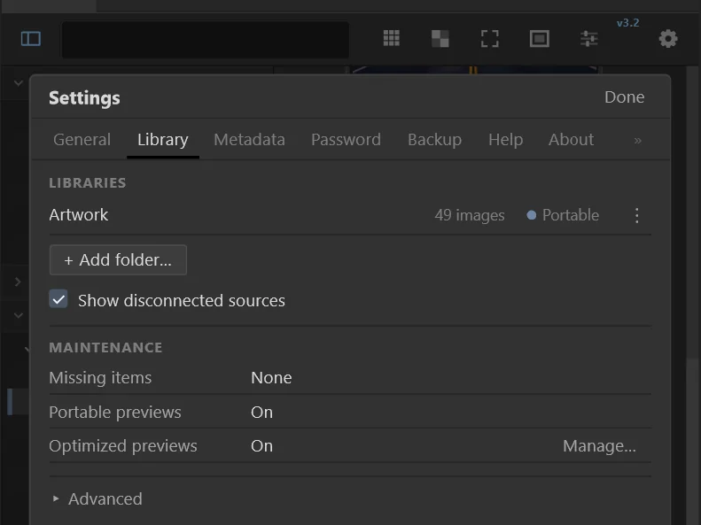
Settings > Library: your libraries, Add folder… and each library's ⋮ menu.
You never need to "index" anything. When you add a folder, or start Photoshop, AssetDEK checks each library in the background and brings it up to date: new libraries are read for the first time, libraries from an older version are upgraded, and each library is checked once per session for files added, changed or removed outside AssetDEK. You can browse, search and work while this happens. A quiet line under the library name in FOLDERS shows what is going on (Preparing, Updating, Not connected); nothing is shown when a library is simply up to date.
Each library keeps a .assetdeck data folder on its drive. It is visible on Windows and normally hidden on macOS because its name starts with a dot. For a writable library, AssetDEK always saves required organizational records in both its local AppData store and that library’s .assetdeck state; the Portable switch controls optional rebuildable data such as previews, indexes and caches, not notes, favorites, locks, tags, display names, identities or restore information. A read-only library remains browseable, but changes requiring both copies are unavailable. If a drive comes back with a different letter or you plug it into another computer, choose Add folder… or Locate… in Settings > Library to reconnect and reconcile it. A disconnected source stays in the source list for reconnection, but none of its assets or folders appear in browsing, search or saved-search results.
Settings > Library lists your libraries and their image count. Its Portable switch controls optional rebuildable previews, indexes or caches; required organizational records always use both AppData and portable .assetdeck state for writable libraries. A read-only library can be browsed but cannot accept changes that need both stores. The ⋮ menu offers Validate, Rebuild index, Build missing previews, Pause / Resume, Locate… for a missing library and Remove from AssetDEK (files are not touched). MAINTENANCE below shows missing items and optimized previews; Advanced holds the Archive / Deleted folder options and legacy cache data.
LIBRARY shows All images, Favorites, Locked, Duplicates, Archive and Deleted. FOLDERS shows connected, validated libraries as a folder tree. AssetDEK includes content only from sources currently available; a disconnected source remains in the source list for reconnection, but none of its assets, folders, names or cached previews appear in content views or search. Reconnecting validates and reconciles the source before its eligible content returns. Click a folder to see its images and subfolders; use the chevron to open or close it. The strip under FOLDERS shows the selected folder and its available actions. LIBRARY, TAGS, FOLDERS and INFO can each be collapsed with their headings; AssetDEK remembers which are open and how big they are.
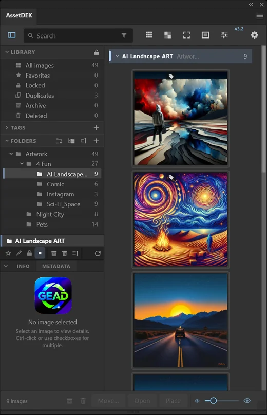
The panel: search and toolbar at the top, LIBRARY, TAGS and FOLDERS on the left, the gallery on the right, INFO / METADATA below the folders and the card-size slider at the bottom right.
The slider at the bottom right of the panel, between the small and the large eye, sets the card size (48 to 512 px). Drag it, or turn the mouse wheel over it; hold Shift for finer steps. The contact-sheet button switches Quick View on and off: tighter cards for scanning many images at once.
With a Photoshop document open, Photoshop only sends the mouse wheel to a panel that has keyboard focus. AssetDEK takes focus while the pointer is over it (Settings > General) and gives it back when the pointer leaves, so your Photoshop shortcuts keep working. You can also drag the scrollbar thumb, click the rail, or use the arrow keys, Page Up/Down, Home and End.
Click to select. Ctrl-click (Cmd-click on Mac) or the checkbox in a card's strip adds to the selection; Shift-click selects a range. Double-click, or Open in the footer, opens the original file in Photoshop. Place adds the original to the active document as an embedded smart object. AssetDEK always opens and places the original file, never a preview.
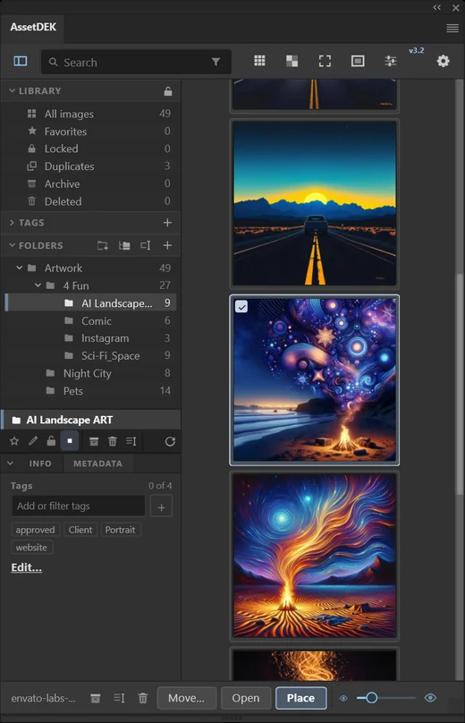
A selected card. Open and Place in the footer always use the original file.
The search box matches file names, display names, notes, AssetDEK tags and the metadata read from your images: prompts, models, seeds, keywords, captions, camera details and the app that made an image (for example "maine coon", "flux", "chatgpt" or a seed number). Negative prompts are not searched, so "dog" does not find images generated to avoid dogs. Matches found only in other text stored in a file are listed after the rest. By default every word must match (photos with both people). The funnel button in the search box opens the filters: Match all words or any word, look in names / notes / tags / metadata, only favorites / with notes / with tags, and file types. Results update as you click; the funnel stays lit while a filter is on, and the filters reset when you clear the search. Locked images never appear in search results.
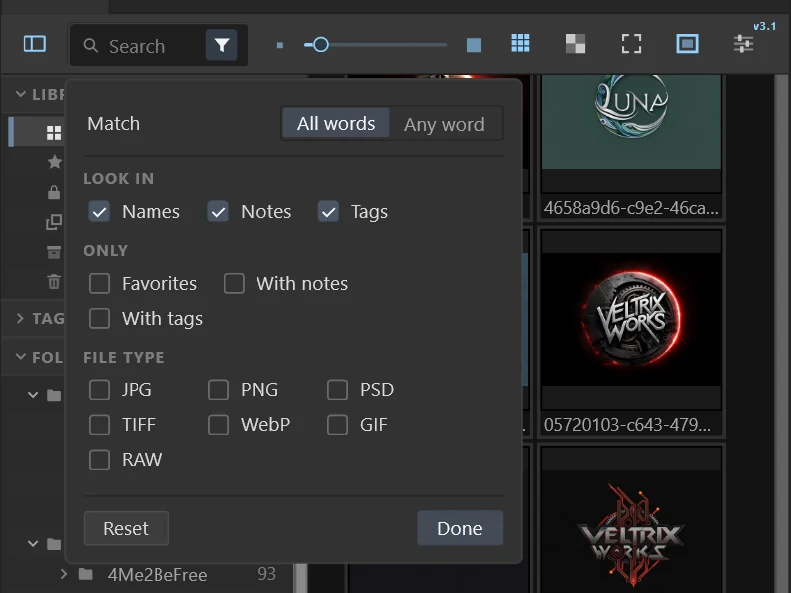
The search filters (funnel button): match, look in, only, and file types.
Favorite, Archive or Delete a whole search result (the buttons on the results bar) and AssetDEK saves that search under LIBRARY > Favorites, Archive or Deleted (open the arrow). Point at an entry to see the full search, its filters, when it was saved and refreshed, and how many currently available images it holds. Refresh evaluates the saved definition against currently connected and validated sources; disconnected assets never appear as cards. If no relevant source is available, the notice says “This saved search has no currently available sources. Reconnect a source to view results.” When some sources are disconnected, available results remain visible with a notice. Archive and Deleted entries have Restore all, and tidy themselves away once everything is restored. The × removes only the saved search: your images stay exactly where they are, and Undo brings the entry back.
The View button (sliders icon) sets the sort order (name, dates, size, favorites, notes), the grouping (folder, month, file type, favorites, none), filenames, format badges, card controls and group labels; Done closes it. The arrows reverse the order. Group labels: Bars puts a header bar above each group (click it to collapse the group); Tiles lets all images flow together, each group starting with a small label tile.
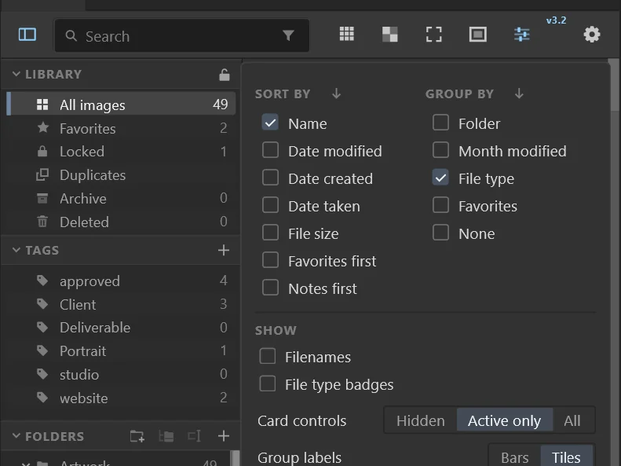
View: sort, group, show, card controls and group labels.
Every card has a slim strip across the top: selection checkbox, transparency preview, tags, note, Archive, Delete, lock and favorite. A control that is on is a solid white chip; off controls are dim outlines. On small cards the optional buttons are left out. View > Card controls (also in Settings > General): Hidden shows nothing until you point at a card, Active only shows just what is on, All shows every control. Folder group headers follow the same choice. A selected card has a white frame and a checked box. A strip button applies to the whole selection when the card is part of it.
Click the star in a card's strip, or drag images onto LIBRARY > Favorites. Favorites appear under LIBRARY > Favorites. If the card is part of a multi-selection, the star applies to the whole selection. Folders can be favorited too (the star in the folder bar); they are listed under FAVORITE FOLDERS, and favoriting a folder does not favorite its images.
Click the pencil in a card's strip to add or edit a note; folders have notes in the folder bar. Notes are searchable. They are stored by AssetDEK and never written into the image file.
Click the tag button on a card, or use INFO > METADATA, to add AssetDEK tags to an image. TAGS in the sidebar lists your tags with how many images carry each; click one to see those images, and use + to add tags to your vocabulary before using them. Tags are AssetDEK records; they are written into the image file only if you turn on Settings > Metadata > Save AssetDEK tags into image files (see Saving tags into image files). Keywords already embedded in a file are shown under METADATA.
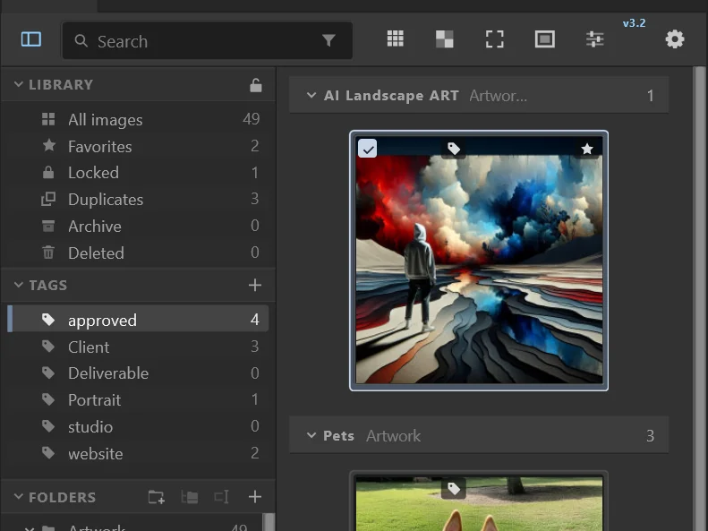
Click a tag under TAGS to see the images that carry it.
A display name is the name AssetDEK shows for an image, without renaming the file. Set them with Batch rename > Display name. The file name stays visible in the card's tooltip.
Select one image and open INFO for its file details, dimensions, color mode and camera data, or METADATA for its AssetDEK tags and the text stored in the file. METADATA shows Generation (prompt, negative prompt, model, seed, steps, CFG scale, sampler and the generator, for images made with AI tools such as Venice.ai, Stable Diffusion, ComfyUI, InvokeAI or NovelAI) and Provenance (whether the file says it is AI-generated, and its Content Credentials, for example ChatGPT or Adobe Firefly). Generation and Provenance appear at once because they were read when the library was indexed; the rest is read from the file when you open the tab. Values can be selected and copied.
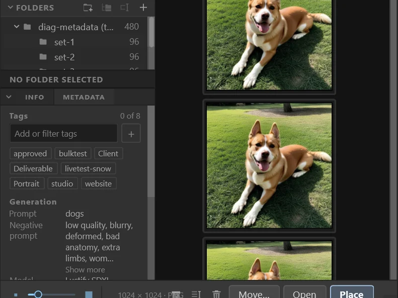
METADATA > Generation for an image made with Venice.ai.
AssetDEK reads metadata from connected image files in the background so search can find prompts, models, seeds, keywords, captions, camera details and Content Credentials. The original image remains authoritative: normalized values and fingerprints are cached with source size/time and extraction-version evidence, and a changed source invalidates the old cache until the image is reread. Searching an unchanged index does not reopen files. Metadata is processed locally. Rich embedded values are not copied to AppData as identity evidence. Turn reading off in Settings > Metadata; cached values are not shown as current when source evidence changes. Reading never changes your image files.
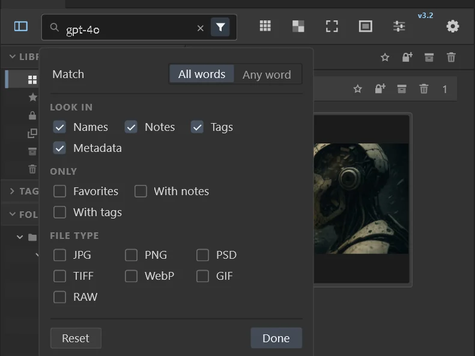
Searching a model name with Metadata switched on in the search filters.
Off by default. With Settings > Metadata > Allow metadata editing on, METADATA shows Edit… for PNG and JPEG files: change the title, description, creator (several names separated with ;) and copyright stored in the file, the standard fields Lightroom, Bridge and Photoshop show. Only those fields change: the picture and all other metadata, including AI generation parameters, stay exactly as they are, and other languages of a title or description are kept. An empty field is removed from the file. Saving uses the same checks as saving tags (see Saving tags into image files): a file open in Photoshop, changed outside AssetDEK, damaged or in an unusual format is left as it is and the reason is shown. Saving changes the modified date of the file. Keep a backup of important images.
Off by default. New tag changes are written only from the point you enable Settings > Metadata > Save AssetDEK tags into image files. Existing AssetDEK tag assignments are not written retroactively. To write previously assigned tags into supported PNG and JPEG images, use the separate Write existing tags into files… operation under the switch; it shows what is eligible and skipped, asks first, then writes one file at a time with a Stop button and a summary. Only AssetDEK tags are written as standard keywords; notes, favorites, locks, display names and other AssetDEK records stay in AssetDEK. Keywords added by other apps are never removed, and AssetDEK removes only keywords it added itself. Each supported file is rewritten through a checked temporary copy; a file open in Photoshop, changed outside AssetDEK since indexing, damaged or unusual is left unchanged and reported. Archived, Deleted and locked images are skipped. Writing changes the file’s modified date and can make formerly identical copies differ. Keep a backup of important images.
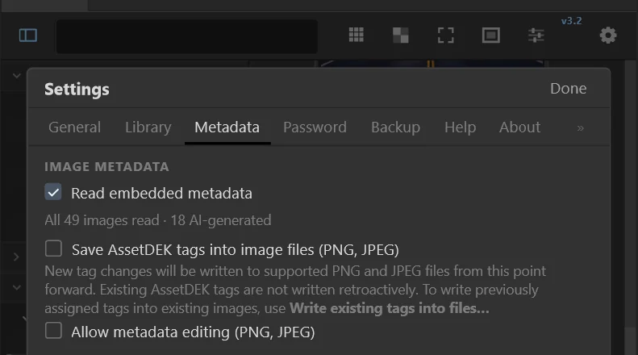
Settings > Metadata: reading is on; both writing options are off by default.
The checkerboard button in the toolbar sets the background behind transparent images (dark, light or checkerboard); the small checkerboard in a card's strip changes it for that image only, for this session. The framed-picture button left of View (the sliders icon) switches the gallery to a dark viewing background with 2 px card frames; the rest of the panel does not change. The frame button left of it cycles the card frame: none, slide or Polaroid. A frame crops the picture to its window (very wide or tall images are cropped more) and scales with the card size. Clicking empty space in the gallery clears the selection. The image files are never changed.
Previews are generated display representations, not originals. When the library is connected and validated, AssetDEK looks first for a valid preview in portable .assetdeck state, then in the local AppData cache, and otherwise regenerates it from the original. Source changes invalidate stale previews. Open, Place, editing and file operations always require the live original. A disconnected library never displays cached previews or metadata as browseable assets. Previews are rebuildable; clearing them does not remove identity or organizational state. Settings > Library > Optimized previews > Manage… offers Build missing, Pause, Resume, Rebuild and Clear, along with switches for optional portable previews and WebP / RAW / BMP thumbnails.
Photoshop's panel cannot display WebP, BMP or camera RAW files itself, so AssetDEK makes previews of them the same way. For a RAW file only the picture the camera stored inside it is used; a RAW file without one keeps its placeholder. Whether Photoshop can open a RAW original is decided by Photoshop and Camera Raw: if it cannot, AssetDEK tells you so, even though it can show a preview.
Listed and shown: JPEG, PNG, GIF, PSD and PSB (from the preview stored in the file), WebP, BMP, TIFF, and camera RAW (CR2, CR3, CRW, NEF, NRW, ARW, SRF, SR2, DNG, RAF, RW2, ORF, PEF, SRW, KDC, DCR, GPR, 3FR, IIQ, ERF, MRW, MOS). AVIF and HEIC are listed with a placeholder. Animated GIFs play in the gallery cards; Open and Place use the original GIF file. Ordinary TIFFs and files without a usable preview show a labelled placeholder. WebP and BMP images over 16 megapixels, animated WebP, and images over 100 megapixels keep a placeholder. Generic .raw files are not listed (other programs use that extension for non-image data).
Drag cards onto a folder in the sidebar, or select images and click Move…. Existing files are never overwritten: if the name is taken, the moved file gets a new name like "photo (2).png". When a move crosses drives, the original is only removed after the copy has been checked byte for byte (large files at many points). Folders can be dragged onto other folders too. Favorites, notes, tags, locks and previews move with the files. Any failure is listed and nothing else is changed.
The buttons next to FOLDERS are: New folder (at the top of a library), New nested folder (inside the selected folder), Rename, and Add folder. They change real folders on disk. Names Windows or macOS do not allow are refused, and an existing name is never overwritten. When a folder is renamed, the records of everything inside it move with it. A library folder itself cannot be renamed here: rename it in Explorer or Finder, then use Locate… in its ⋮ menu in Settings > Library.
Use the rename button in the folder bar, or in the footer with images selected. Choose Display name (AssetDEK only; files are not renamed) or Actual filename (renames the files on disk). Pick the images: selected, this folder, or the folder and its subfolders. Pick a preset or write a pattern with {parent} {folder} {name} {number} {dateCreated} {dateModified} {dateTaken} {width} {height}. dateCreated is when the file arrived on this disk; dateTaken comes from the image metadata. If a value is missing you choose what happens. The preview shows every change and every problem before anything happens. Extensions are kept, nothing is overwritten, every result is checked on disk, and Undo last rename puts the names back, even after restarting Photoshop. If Photoshop closed during a rename, AssetDEK offers to put the files back the next time it starts.
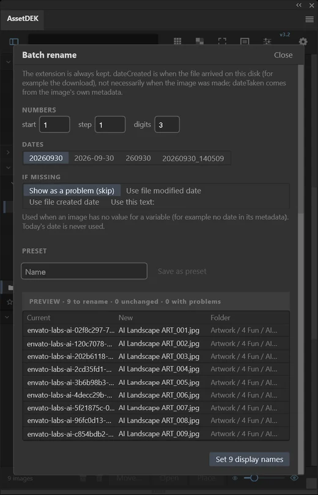
Batch rename shows every new name before anything changes.
Use the Archive (box) or Delete (bin) button on a card or in the footer, drag images onto LIBRARY > Archive or Deleted, or use the same buttons in the folder bar for a whole folder. Items are moved into an Archive or Deleted folder beside them; nothing is erased and the Recycle Bin is not used. Archive and Deleted show eligible items only from connected, validated libraries. Disconnected sources contribute no cards, placeholders, filenames or cached previews to these or any other content view. Restore puts an available item back where it came from; if the original folder is gone or the name is taken, you choose what happens. Moving images to Deleted asks first (you can turn that off in Settings > General); folders always ask.
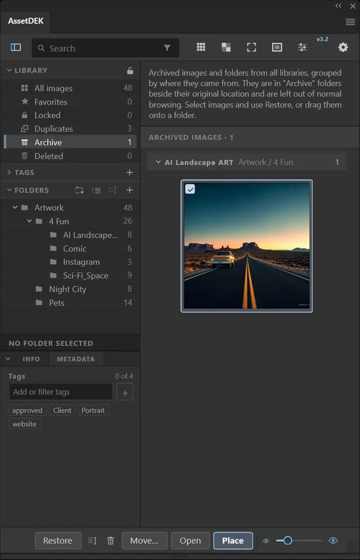
LIBRARY > Archive lists archived images from every library; Restore puts them back.
If a file or folder with AssetDEK records disappears outside AssetDEK (moved, renamed or deleted in Explorer or Finder), its records are kept and listed in Settings > Library > Missing. Relink… lets you choose a folder to search; only a file proven to be the same image (identical content, or the fingerprint recorded for it) is relinked. You can also set an item aside until Photoshop restarts (Later), Dismiss the reminder (the records are kept and reconnected automatically if the exact file turns up), or Remove reference to delete just the records AssetDEK keeps for it. Images moved or renamed in Explorer or Finder (also into another library) are usually found again automatically: AssetDEK looks only at files of exactly the same size, proves the match by the content of the file, and then reconnects its favorites, notes, tags and locks and moves its previews along. Cases it cannot prove cheaply stay under Missing for Relink. Turn this off in Settings > Library > Advanced. Nothing on disk is changed by any of this, except that previews move with their image.
LIBRARY > Duplicates finds exact copies: files with identical content (only files of the same size are compared, then their contents are hashed; files are only read). Each set of copies is one group. Select extras keeps one copy per set (the oldest, the newest or the one with the shortest path) and selects the others; Move to Deleted moves the selected copies into a Deleted folder beside each file, so nothing is erased and Restore brings them back. Resized or re-saved versions of a picture are not exact copies and are not listed. Locked images and Archive / Deleted are left out.
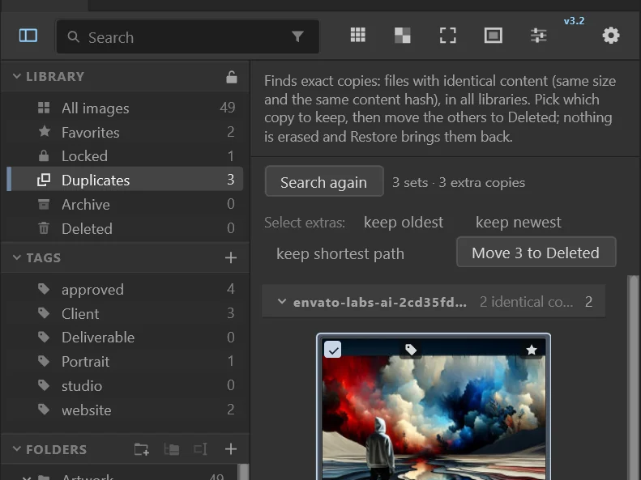
Duplicates after "keep oldest": the extra copies are selected, ready for Move to Deleted.
Group bars (when grouping by month, file type or favorites) and the search results bar have three buttons that act on every image shown there: protect (lock with a plus), Archive and Delete. For example, search for a tag and move every image with it to Deleted in one go. Each asks first and says how many images it will move; Archive and Delete move files beside their originals and Restore brings them back. Locked previews are never moved this way.
Folder lock: select a folder and click the lock in the folder bar or in its group header. Image lock: click the small lock in a card's strip, or drag images onto LIBRARY > Locked. Locked previews are hidden inside AssetDEK until the password is entered. Folder locks and image locks are separate: unlocking a folder does not remove locks on its images.
After you enter the password once, it is remembered for this Photoshop session, and you reveal things one at a time: click a lock card to reveal that image, or use a folder's padlock to reveal its images (with or without subfolders). Master Unlock (LIBRARY heading) reveals everything; Lock All hides everything again and forgets the password, as does closing Photoshop. LIBRARY > Locked lists every locked folder and image, where you can show, unlock or remove locks. None of this changes what is protected.
Locks are a privacy convenience inside AssetDEK only. They do not lock, encrypt, rename, move, hide or change the permissions of the real files, which stay fully accessible in Explorer, Finder, Photoshop and any other program. They do not protect anything from someone who can use this computer.
The lock password starts as admin; change it in Settings > Password (at least 4 characters). If you forget it, use Forgot password: after you confirm, the password goes back to admin and every folder and image lock is removed, so hidden previews become visible again. Favorites, notes, folders and settings are kept. The password is stored only as a salted hash in Photoshop's secure storage.
AssetDEK works only on this computer. It has no internet access, needs no account and contains no tracking, and it reads only the folders you add. Browsing and reading metadata do not change image files. Save AssetDEK tags into image files and Allow metadata editing are separate, opt-in PNG/JPEG controls. Embedded metadata, including prompts or GPS locations, is read locally; the original file remains authoritative and stale cached values are not presented after the source changes.
For a writable library, user-created organizational state is committed transactionally to both the local AppData store and that library’s portable .assetdeck state. The Portable setting cannot turn off required records. If either copy is missing after the library reconnects, AssetDEK reconstructs it from the last provably committed state in the surviving copy; it does not guess based on newer-looking data. Read-only libraries remain browseable but cannot accept organizational changes that need both writes. AppData is local recovery and matching data, not a backup of your images.
Each library has a .assetdeck folder with its identity, required portable organizational records, matching evidence and any optional enabled indexes or previews. It is visible on Windows and normally hidden on macOS because its name starts with a dot; AssetDEK does not set the Windows hidden attribute. Writable managed folders receive a README_ASSETDEK_DATA.txt marker that explains the data risk, and an existing marker is never overwritten. Do not edit these files by hand. Generated previews can be rebuilt; deleting .assetdeck can remove AssetDEK-specific information even though it does not delete your images.
Use Settings > Backup to export and restore an additional copy of AssetDEK data. Required lightweight organizational state is already redundantly stored in AppData and each writable library’s portable state; AppData is recovery storage, not a backup of your images. Previews and rebuildable indexes can be generated again. Passwords and Photoshop permission tokens remain machine-local. Keep separate backups of important original images.
Earlier versions of the panel kept large thumbnail caches in AssetDEK's data folder; this version never reads them. Settings > Library > Advanced > Legacy cache data measures them and, only if you confirm, deletes exactly those caches. Your records, backups, libraries and current previews are never touched.
The topics below describe what you may notice in this version, when it happens, whether anything is at risk, and what to do. None of them damages or deletes your image files.
If the same library is open in AssetDEK on two computers (or in two Photoshop installations) at the same time, for example on a shared, network or synced drive, a favorite, note, tag or other AssetDEK change saved by one can replace a change just saved by the other. Image files are not affected, but the replaced AssetDEK change is lost. Use each library from one copy of AssetDEK at a time: close the panel on the other computer before working.
When an image is archived or deleted and its name is already taken there, it is renamed, for example to "photo (2).png". In rare cases, if AssetDEK’s local data is later lost or replaced, Restore puts such an image back under the new name instead of its original one. The image itself is safe. Rename it after restoring if needed.
Moving images with Move… or by dragging them onto a folder can give the moved files a new Created date (the time of the move); the Modified date and the contents are kept. Archive, Delete and Restore keep both dates on the same drive. When a move crosses drives, whether the Created date is kept depends on the drives and file systems involved (it was kept in Windows testing). AssetDEK never rewrites file dates itself. If the Created date matters to you, sort by Date modified or Date taken instead. Folders can only be moved within the same drive.
If a file inside a folder is open in another program, Windows can refuse to rename or move the folder. AssetDEK then says the folder could not be renamed or moved and that nothing was changed. Close the file in the other program and try again. If a folder could not be archived or deleted for this reason, an empty Archive or Deleted folder may be left beside it; it is harmless and is used again next time.
Undo last rename appears in Batch rename when Actual filename is selected, and it undoes only the most recent rename. Earlier renames cannot be undone from AssetDEK after that; rename those files again with Batch rename or in Explorer or Finder.
With Save AssetDEK tags into image files on, a file that cannot be written (for example open in Photoshop, changed outside AssetDEK since indexing, or damaged) is left unchanged and named in a message. The tag is kept in AssetDEK, but writing is not retried automatically. Later, use Write existing tags into files… in Settings > Metadata to write any tags that are still missing.
Email gravitysedge@gmail.com. Settings > About > Export support report saves a small .json file (versions, settings, counts and recent errors; no images, passwords, notes or file names) to AssetDEK's data folder and shows where. Attach it to your email.